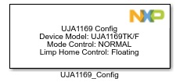
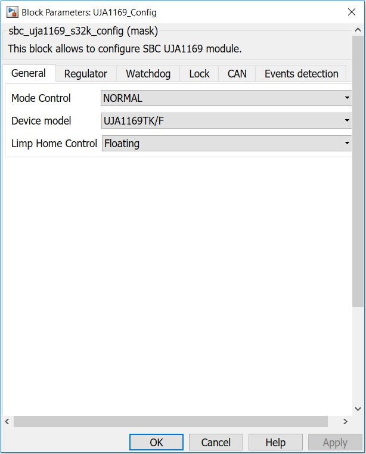
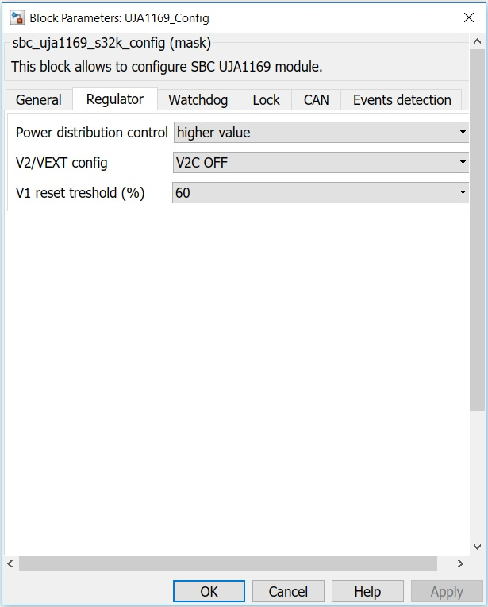
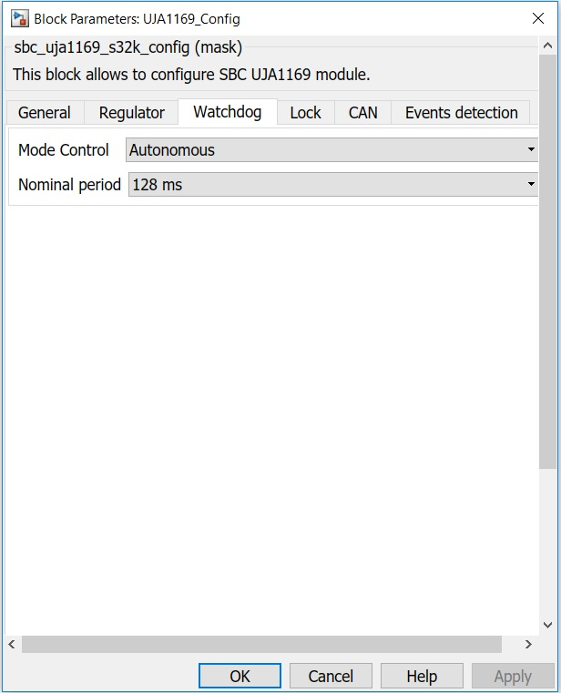
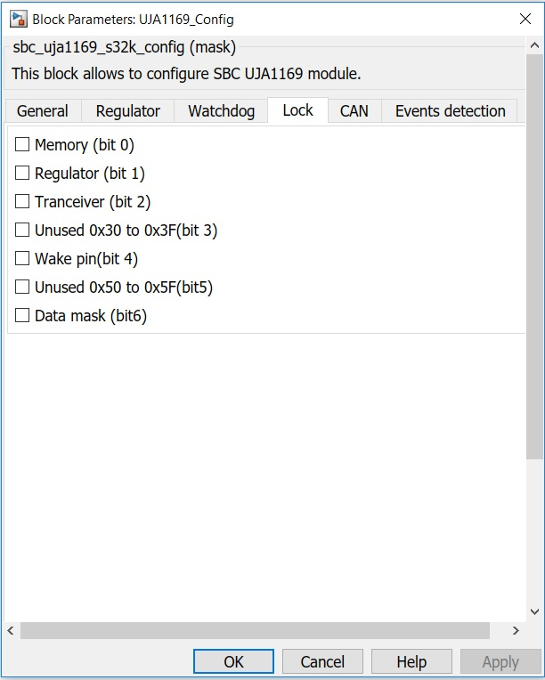
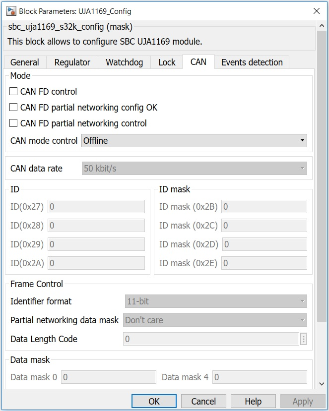
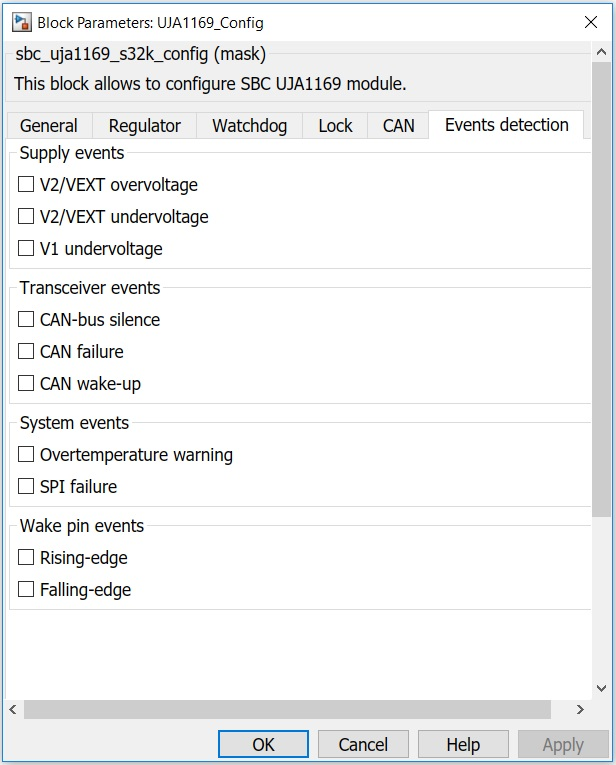

UJA1169 Configuration Block
This block allows the user to configure the SBC module.
Block Image
Inputs:
- None
Outputs:
- None
Parameters and Dialog Box
The block dialog consists of the following tabs:
General
Mode Control
Selects the SBC mode.
In this mode, all the hardware on the device is available and can be activated. Voltage regulator V1 is enabled to supply the microcontroller.
Standby mode is the first-level power-saving mode of the UJA1169, offering reduced current consumption. The transceiver is unable to transmit or receive data in Standby mode. The SPI remains enabled and V1 is still active; the watchdog is active (in Timeout mode) if enabled. The behavior of V2/VEXT is determined by the SPI setting.
Sleep mode is the second-level power-saving mode of the UJA1169. The difference between Sleep and Standby modes is that V1 is off in Sleep mode and temperature protection is inactive.
Device model
There are 6 device models available for selection.
Limp Home Control
The dedicated LIMP pin can be used to enable so called ‘limp home’ hardware in the event of a serious ECU failure. Detectable failure conditions include SBC overtemperature events, loss of watchdog service, short-circuits on pins RSTN or V1 and user-initiated or external reset events. The LIMP pin is a battery-robust, active-LOW,open-drain output. The LIMP pin can also be forced LOW by setting bit LHC in the Fail-safe control register
Regulator
Power distribution control
V1 threshold current for activating the external PNP transistor, load current rising; Ith(act)PNP (higher value) V1 threshold current for deactivating the external PNP transistor, load current falling; Ith(deact)PNP (higher value)
V1 threshold current for activating the external PNP transistor; load current rising; Ith(act)PNP (lower value) V1 threshold current for deactivating the external PNP transistor; load current falling; Ith(deact)PNP (lower value)
V2/VEXT configuration
V1 reset threshold (%)
Sets the V1 reset threshold.
Watchdog
Mode control
The UJA1169 contains a watchdog that supports three operation modes:
It is available only in SBC Normal Mode. In this mode, a watchdog trigger event within a defined watchdog window triggers and resets the watchdog timer.
In this mode, the watchdog runs continuously and can be triggered and reset at any time within the watchdog period by a watchdog trigger. Watchdog time-out mode can be also used for cyclic wake-up of the microcontroller.
In Autonomous mode, the watchdog can be off or autonomously in Timeout mode, depending on the selected SBC mode.
Nominal period
Available 8 periods selections in ms.
Lock
Sections of the register address area can be write-protected to protect against unintended modifications. It only protects locked bits from being modified via the SPI and will not prevent the UJA1169 updating status registers. For each section, if the box is checked, SPI write access is disabled, otherwise SPI write access is enabled.
CAN
Mode
According to the device model selected, there are available one or more of the following selections:
If checked, CAN FD tolerance is enabled, otherwise is disabled.
If checked, partial networking registers configured successfully, otherwise partial networking register configuration is invalid (wake-up via standard wake-up pattern only)
If checked, CAN selective wake-up is enabled.
CAN can be set to offline-mode or Listen-only mode.
Partial networking allows nodes in a CAN network to be selectively activated in response to dedicated wake-up frames (WUF). Only nodes that are functionally required are active on the bus while the other nodes remain in a low-power mode until needed. If both CAN wake-up (CWE = 1) and CAN selective wake-up (CPNC = 1) are enabled, and the partial networking registers are configured correctly (PNCOK = 1), the transceiver monitors the bus for dedicated CAN wake-up frames.
CAN data rate
Available data rate selections in kbit/s.
ID
ID registers, identifier format (0x27 to 0x2A).
ID mask
An ID mask can be defined to allow a group of identifiers to be recognized as valid by an individual node. The identifier mask is defined in the ID mask registers, where a 1 means 'don't care'.
Identifier format
Partial networking data mask
Data Length Code
Number of data bytes expected in a CAN frame.
Data mask
The data field indicates the nodes to be woken up.Within the data field, groups of nodes can be predefined and associated with bits in a data mask. By comparing the incoming data field with the data mask, multiple groups of nodes can be woken up simultaneously with a single wake-up message.
Events detection
The following events detection can be enabled:
Supply events
Transceiver events
System events
Wake pin events
Block Dependency
- Configure the Target Configuration block.
- Configure the LPSPI Configuration block.
Block Miscellaneous Details
- None